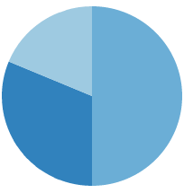

Muerte Materna en Argentina
Es una plataforma de monitoreo de la mortalidad materna para hacer visible un problema complejo y a
la vez evitable que padecen muchas mujeres de nuestro país. Tiene el propósito el hacer pública la información
reportada en las estadísticas oficiales y enriquecerla con otras fuentes y dimensiones de análisis.
Evolución de la razón de muerte materna (RMM) por causa
Reset
Causas de muerte directas
Causas de muerte indirectas
Contexto Nacional
-
302
mujeres murieron en el 2011
-
4.0
es la RMM del país en 2011
-
1.3
es la RMM más baja del país, en CABA
-
12.3
es la RMM de Formosa, la más alta del país
-
1.3
es la RMM que debe alcanzar la Argentina para cumplir con la meta propuesta para el ODM5 en 2015
Evolución de la RMM nacional 2006-2010
Buenos Aires
-
4.4
razón de muerte materna
-
2.05
tasa global de fecundidad
-
24.22
proporción de egresos por abortos
-
86.43
Proporción de nacidos vivos atendidos por personal capacitado
¿Dónde murieron?

¿Tenían cobertura médica?
¿Tuvieron atención médica?
¿Habían ido a la escuela?
¿Qué edad tenían?
¿Por qué murieron?